Synthetic scanned contract — color
Status: optimized · páginas 1 → 1 · original 2240554 bytes · final 339993 bytes · economia 84.83% · pixels alterados 3.91% · delta médio 1.39 · delta máximo 30
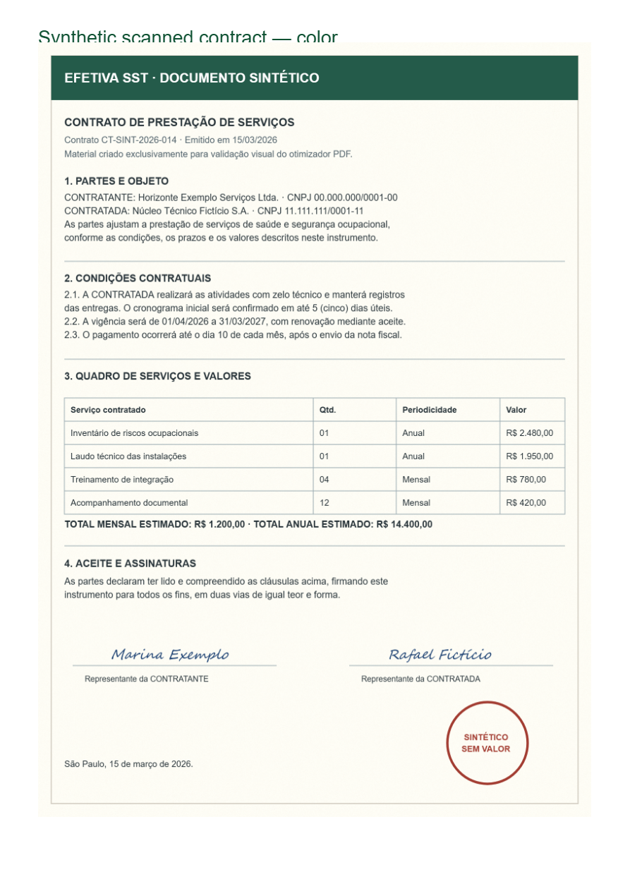
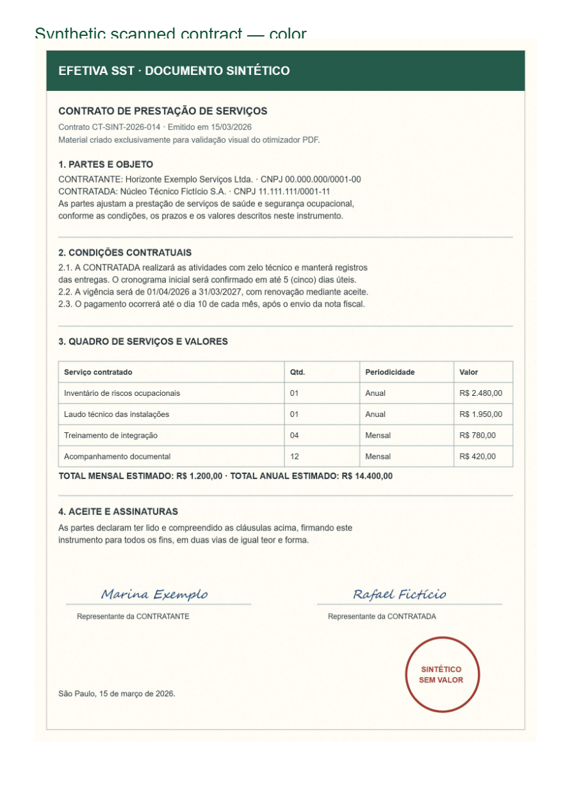
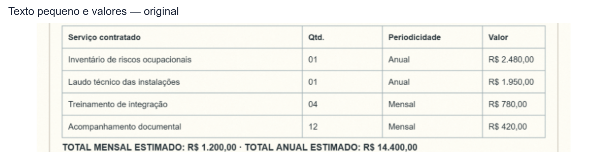
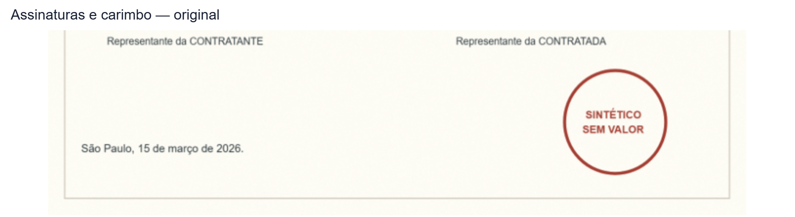
Documentos fictícios com cláusulas, valores, tabelas, assinaturas manuscritas simuladas e carimbos. Originais e resultados renderizados pelo mesmo PDF.js/Chromium, escala 1.5. A aprovação visual humana permanece PENDING.
Status: optimized · páginas 1 → 1 · original 2240554 bytes · final 339993 bytes · economia 84.83% · pixels alterados 3.91% · delta médio 1.39 · delta máximo 30




Status: optimized · páginas 1 → 1 · original 2210061 bytes · final 403599 bytes · economia 81.74% · pixels alterados 0.12% · delta médio 1.05 · delta máximo 8
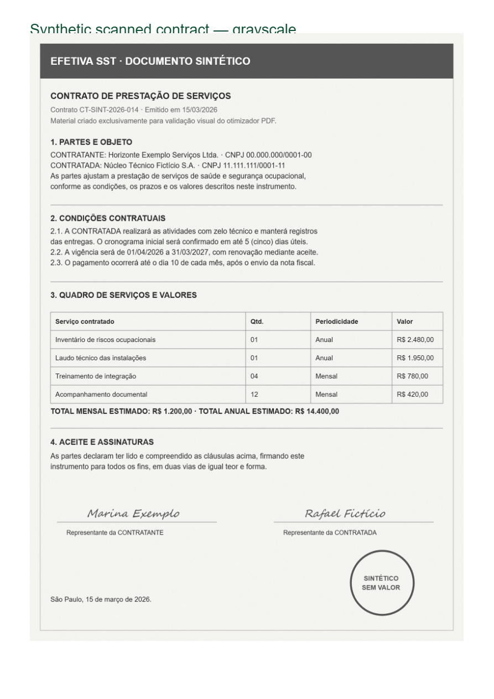
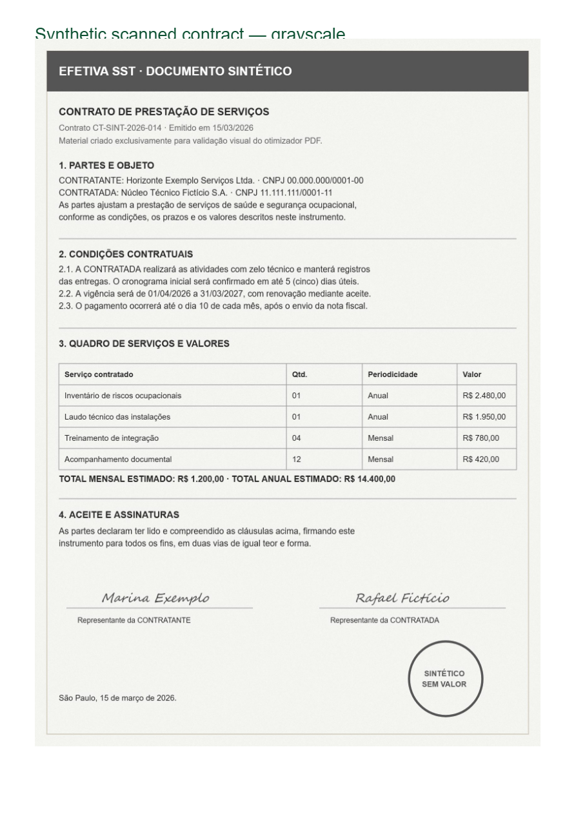
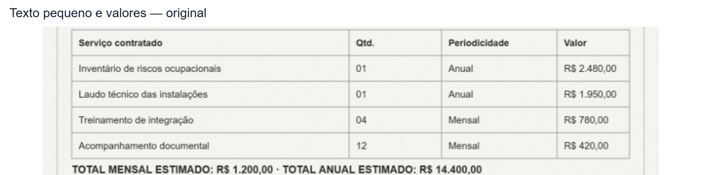
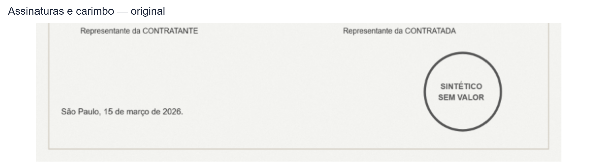
Status: optimized · páginas 1 → 1 · original 2218410 bytes · final 345230 bytes · economia 84.44% · pixels alterados 3.62% · delta médio 1.26 · delta máximo 38
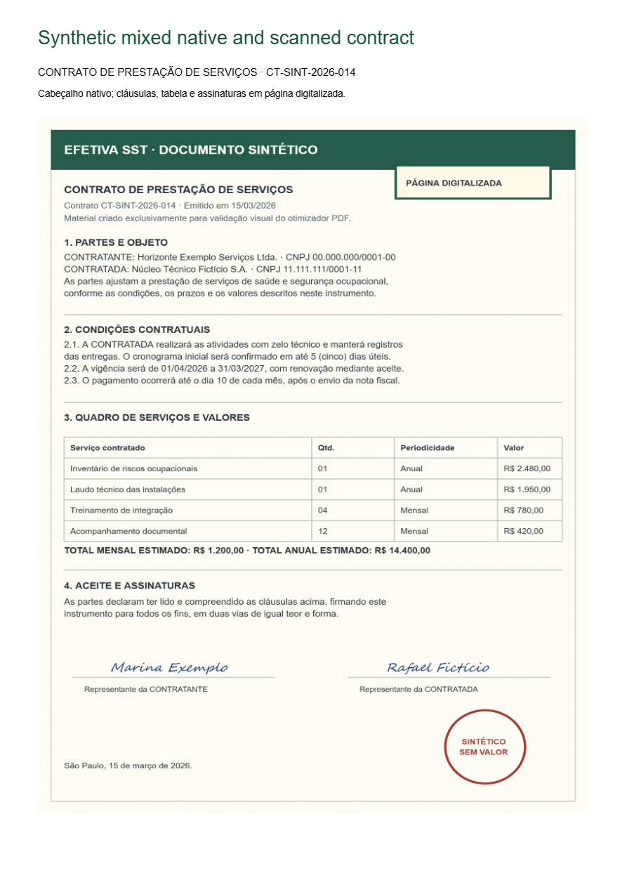
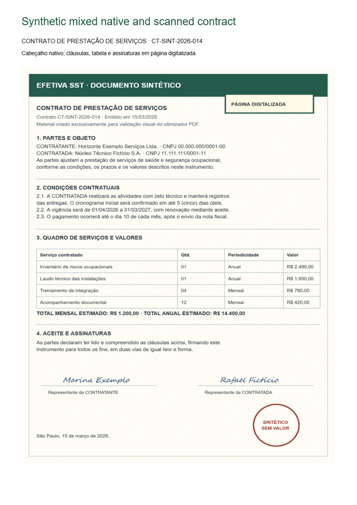
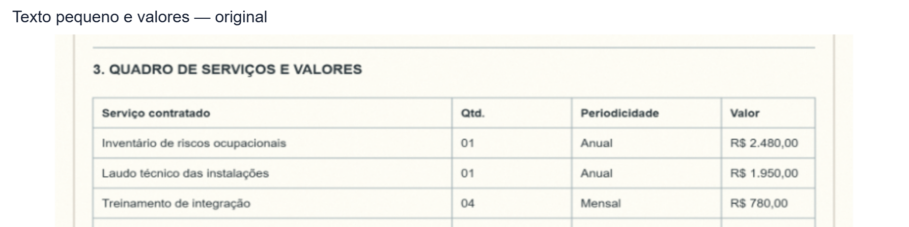
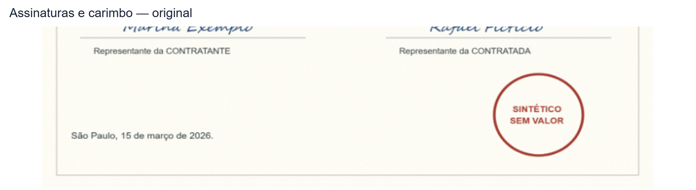